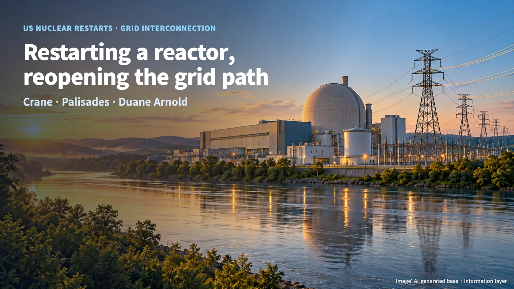
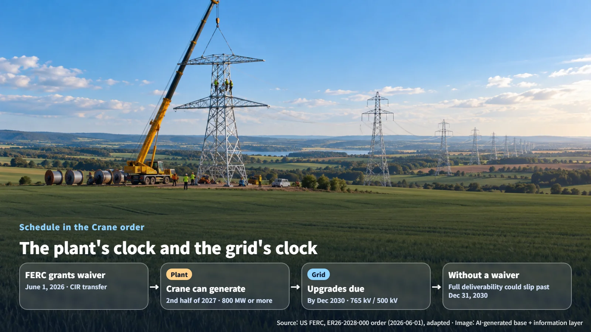
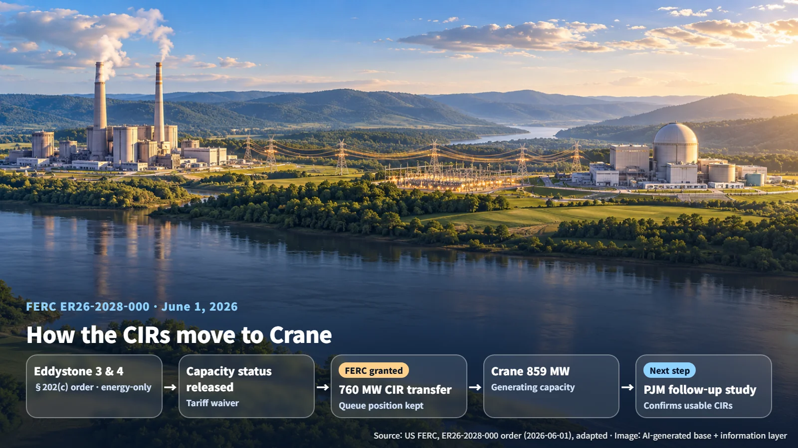

United States · Grid Interconnection
Restarting a Reactor Also Means Reopening the Road to the Grid: Interconnection at Crane, Palisades and Duane Arnold
Restarting a shuttered reactor also means securing a path onto the transmission grid, and Crane, Palisades and Duane Arnold are each taking a different route.
Editorial responsibility: GlobalNuclearNews
When a shuttered nuclear plant is slated to come back, it is easy to picture power flowing the moment the reactor is ready. Yet the electricity a plant produces reaches customers only when the transmission grid is ready to carry it. Three restart projects in the United States show how that second path is being secured.

Two Clocks: Readying the Plant and Readying the Grid
A restarting plant moves through two tracks at once. One is the Nuclear Regulatory Commission (NRC) safety review and inspection process. The other is grid interconnection: the process that evaluates how the plant's output will affect the transmission system and sets the conditions for interconnection service, construction and operation. Whether a waiver of transmission and interconnection tariff rules is granted is decided by the Federal Energy Regulatory Commission (FERC).
The two agencies held a joint meeting on October 22, 2026, at NRC headquarters in Rockville, Maryland. According to an October 23 report by the American Nuclear Society (ANS), FERC cited NERC's February long-term reliability assessment, which projects summer peak demand growth of 224 GW over the next ten years, with data centers named as a major driver. The meeting also described approaches that transfer existing interconnection rights to restarting reactors. The session served as a forum for the two agencies to discuss current issues; interconnection measures are applied for and decided project by project.
The moment a reactor is ready and the moment the transmission lines that carry its power are finished each run on their own clock.
Crane: Taking Over Another Plant's Interconnection Rights
Capacity Interconnection Rights (CIRs) are the rights to inject output into the grid as a "capacity resource" at a point of interconnection. PJM Interconnection, the regional grid operator, evaluates the deliverability of capacity resources so they can be used to meet load-serving entities' capacity obligations. Think of a CIR as a reserved seat on the grid.
Under the developer's plan as described in the FERC order, Crane can generate 800 MW or more in the second half of 2027. The system impact study, however, relies on contingent facilities: equipment that is still unbuilt but on which the study's results, costs and schedule depend. These include several hundred miles of new 765 kV and 500 kV transmission lines, with completion expected by December 2030. FERC recognized as a concrete problem that, without a waiver, Crane's full deliverability to the grid could be delayed until after December 31, 2030.

The solution came from Eddystone, a gas- and oil-fired plant. Eddystone was operating as an energy-only resource under a Department of Energy (DOE) emergency order issued under Section 202(c) of the Federal Power Act, leaving it with CIRs it could not use. On June 1, 2026 (ER26-2028-000), FERC granted a tariff waiver allowing Eddystone Units 3 and 4 to give up their capacity resource status and transfer their CIRs to Crane. FERC applied four criteria: good faith, limited scope, resolution of a concrete problem, and the absence of undesirable consequences such as harm to third parties. It also found that Crane keeps its place in the interconnection queue.

A restarting reactor is taking over a grid seat that another power plant could not use.
Palisades and Duane Arnold: Two Different Paths
Palisades chose to keep its existing interconnection. A February 2025 filing by the Michigan Public Service Commission (MPSC) supported a request to extend the suspension period under Attachment Y of MISO, the Midcontinent regional grid operator, from 36 months by an additional 22 months. The request would move the existing deadline of May 20, 2025, to March 1, 2027, and tied the extension to the schedule for NRC review, site inspections and equipment restoration. At the time of the filing, the operator's target start-up date was May 30, 2026, and the latest restart date allowed under the power purchase agreement was March 1, 2027. Holtec announced on April 7, 2025, that FERC had approved a waiver to preserve interconnection service. On October 13, 2026, the NRC approved a license amendment for moving tilted fuel assemblies. A date for resuming commercial operation has not been confirmed in public records.
Duane Arnold was presented as a case that draws on the interconnection rights of a solar project. The Federal Register noted that NextEra Energy Duane Arnold filed a limited, prospective waiver request (ER25-2989-000) on July 25, 2025, and opened it for comment. The NRC approved the license transfer on March 30, 2026, issued a draft environmental assessment and finding of no significant impact on July 30, and closed public comment on September 2. The final environmental assessment is expected in fall 2026, and applications covering operating license and technical specification amendments, restoration of emergency planning, and security plan updates are under review. In September 2026, DOE announced the closing of a loan of up to $1.9 billion, noting that NRC licensing approvals are required for the restart and for supplying power to the MISO grid.
One plant extended the deadline on its existing interconnection; the other is drawing on another project's rights.
Next Steps: PJM's Analysis and the Decisions Still Ahead
The Crane order lists Eddystone's 760 MW of CIRs and Crane's 859 MW of generating capacity separately. The two figures describe different things, and the amount of CIRs the new point of interconnection will actually accommodate will be confirmed in PJM's follow-up system analysis. FERC likewise stated that the CIR transfer could reduce or eliminate contingent facilities and improve interim deliverability, with the actual effect depending on PJM's analysis.
The remaining decisions differ by project. For Crane, the next gate is PJM's follow-up analysis. For Palisades, it is aligning the NRC restart process with the interconnection deadline. For Duane Arnold, it is FERC's ruling on the waiver request together with the NRC's final environmental assessment and licensing reviews.
Putting the reactor's clock and the grid's clock on a single schedule is the finishing work of a restart.
Restarting a nuclear plant means waking up the reactor and, just as much, reopening the road its electricity will travel. Following the transmission timeline alongside each restart announcement brings the full picture into focus.
Revision r001 · October 26, 2026. Editorial attribution added; article content and sources retained.